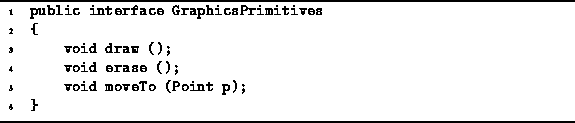

Data Structures and Algorithms
with Object-Oriented Design Patterns in Java
Data Structures and Algorithms
with Object-Oriented Design Patterns in JavaConsider a program for creating simple drawings. Suppose the program provides a set of primitive graphical objects, such as circles, rectangles, and squares. The user of the program selects the desired objects, and then invokes commands to draw, to erase, or to move them about. Ideally, all graphical objects support the same set of operations. Nevertheless, the way that the operations are implemented varies from one object to the next.
We implement this as follows: First, we define a Java interface which represents the common operations provided by all graphical objects. A Java interface declares a set of methods. An object that supports an interface must provide
Program  defines the GraphicsPrimitives interface
comprised of three methods, draw, erase, and moveTo.
the methods declared in the interface.
defines the GraphicsPrimitives interface
comprised of three methods, draw, erase, and moveTo.
the methods declared in the interface.

Program: GraphicsPrimitives interface.
The draw method is invoked in order to draw a graphical object.
The erase method is invoked in order to erase a graphical object.
The moveTo method is used to move an object to a specified position
in the drawing.
The argument of the moveTo method is a Point.
Program defines the Point class
which represents a position in a drawing.
 Copyright © 1998 by Bruno R. Preiss, P.Eng. All rights reserved.
Copyright © 1998 by Bruno R. Preiss, P.Eng. All rights reserved.